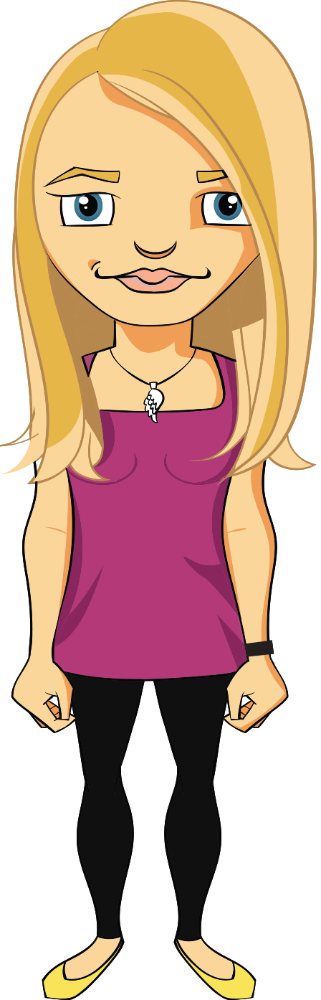

“we value mindset over skillset”

We cherish our culture, so every hire we make is carefully considered. If you’re tempted to join the Media Suite team, read on to see if our ideologies are aligned.
We are a team of curious-minded people who support each other, hold robust debates and don’t mind helping each other move house at the weekend. We thrive on challenges, we view our successes (and failures) as opportunities for growth, and we never, ever want to stop learning.
Our employment philosophy is simple. We look for the right people and then do what it takes to get them on board and keep them around. We aren’t scared to invest in the right people to help realise their potential.
we will
be incredibly open
prioritise learning
challenge the status quo
support you
listen
value your contribution
support flexibility
you should
be incredibly open
bring the willingness to both learn and teach
embrace change, question everything
support your team
speak
value your team’s contribution
act to support trust and autonomy
we will
you should

be incredibly open
be incredibly open
prioritise learning
In order to stay ahead in our ever-evolving industry we provide each member of the team with committed time and budget to advance their learning and professional development. We strive for a supportive environment that celebrates knowledge sharing, mentoring and peer review.
bring the willingness to both learn and teach
You’ll need to have a genuine passion for getting better at what you do, and a willingness to share that journey with the team.
challenge the status quo
embrace change, question everything
support you
We are always willing to hear your ideas on what we can do to support you or the team.
support your team
Everyone on the team is willing to drop what they’re doing to help their peers. We expect the same from you. You’ll need to be comfortable reviewing the work of others and providing teammates with constructive feedback.
listen
This is an environment where everyone’s ideas will be debated, turned upside-down and torn apart. After that, good ideas may just stick and great ideas will be be iterated on and become part of who we are.
speak
You will need to be comfortable sharing your ideas, having them openly debated and be happy when they morph into something else entirely. Ideally, you will be fearless when putting outside-the-square ideas on the table, able to take criticism but also stand up for what you believe in and not be afraid to get behind colleague’s ideas.
value your contribution
We are pretty open about who gets paid what - and how that gets drawn from the success of the business. We’re all working together to raise team salaries alongside the performance of the business, because we favour rewarding the team as a whole over a competitive remuneration model.
value your team’s contribution
Be aware that some of our team have taken pretty big pay cuts to work with us. They’re still here, and they tell us it’s been worth the compromise, so it is extra-important that there is no space to “ride the coattails”, everyone has a role to play in lifting performance to drive up team remuneration.
support flexibility
Most of our team members have the space to work where and when they’re most productive, to best match the individual rhythms of their lives.
act to support trust and autonomy
The price of flexibility is trust. You need to be able to self-manage your time and responsibilities to be your most productive and brilliant self- and not hold back your team or projects.
if you were part of the media suite team this past year, you might have
been teacher and student
- Attended company-wide Agile training
- Presented a topic at one of our Learning Lunches or local JS meetup.
- Been dispatched to conferences in Norway, Australia, New Zealand or Scotland
- Helped run the Southern Hemisphere's first NodeJS conference.
had some fun
- Been involved with planning one of our Media Suite Hack Days
- Eaten Yum Neua (pretty much any Wednesday)
- Escaped to the Marlborough Sounds, with quite a few beers, for a weekend of “user testing”
- Communicated with our self-made robot who lives in our chat room; it has its own personality, gender and name (although these last two get changed frequently).
built meaningful things
- Contributed to a government-backed system to help plan, coordinate and collaborate on the Christchurch rebuild
- Developed a range of environmental science databases which help monitor New Zealand’s natural resources
- Worked on a range of initiatives providing commuters with tools to reduce their commute time.
Current Positions
Could you be the next Media Suite team member? Contact us with your Curriculum Vitae and cover letter.